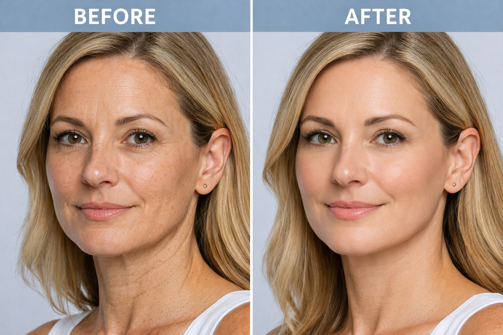

פרוטוקול טיפולי מתקדם לשיקום, מיצוק וחידוש העור – שילוב Morpheus 8 ו-BIO-RE-PEEL

ReGen 8 Pro הוא פרוטוקול טיפולי מתקדם לשיקום, מיצוק וחידוש העור, המבוסס על שילוב בין שתי טכנולוגיות מובילות: Morpheus 8 ו-BIO-RE-PEEL.
הפרוטוקול פועל בשני מישורים במקביל — מיצוק ושיפור מרקם עמוק עם Morpheus 8, לצד חידוש, הארה ועיבוי פני השטח עם BIO-RE-PEEL — ויוצר תוצאה מקיפה ועמוקה יותר מאשר כל טיפול בנפרד.
התוכנית כוללת סך הכל 7 טיפולים בשני שלבים משלימים:
4 טיפולי Morpheus 8 בטכנולוגיית RF Microneedling — חדירה לעומק שכבות העור לגירוי ייצור קולגן, מיצוק משמעותי ושיפור מרקם.
3 טיפולי BIO-RE-PEEL — פילינג ביו-רבנרטיבי המחדש את פני השטח, משפר הארה, טון ועיבוי שכבת העור.
התוצאות מצטברות לאורך הסדרה. תהליך בניית הקולגן ממשיך גם בין טיפול לטיפול — לכן ההמשכיות חשובה להשגת תוצאה מיטבית.
סדר הטיפולים, מרווחי הזמן ביניהם והשילוב המדויק נקבעים לאחר אבחון מקצועי בהתאם למצב העור האישי.
להתאמת פרוטוקול ReGen 8 Pro על בסיס אבחון מקצועי — ניתן לתאם שיחת ייעוץ ללא עלות וללא התחייבות.
תיאום תור טלפוני ללא עלות